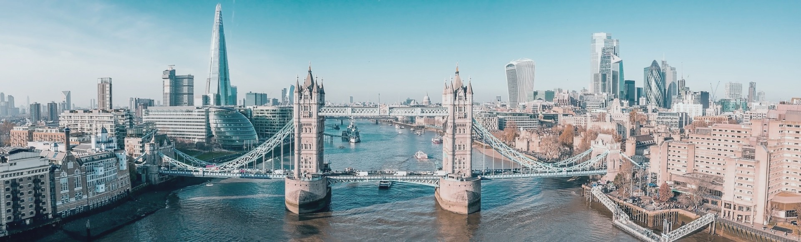
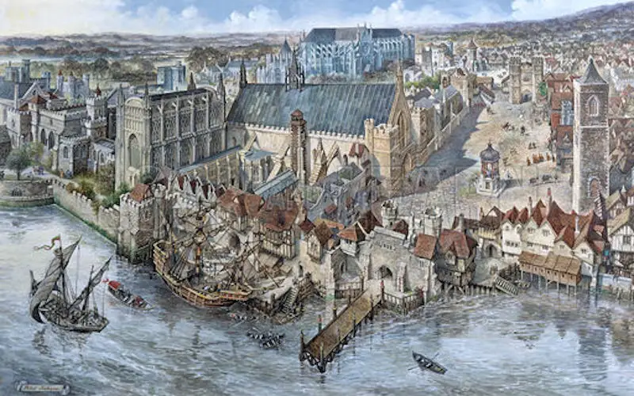
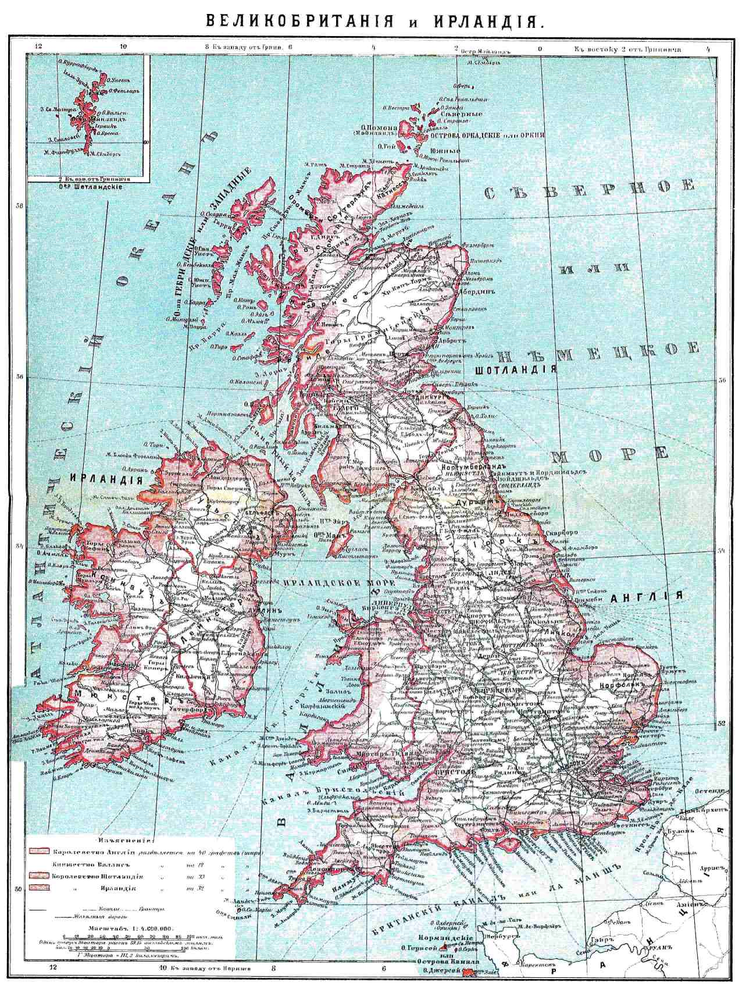

London
Click here to go back to the main page!

About the City |
|
The former Roman city then known as Londinium has been around since the first century. Over the many years of its existence, the capital of England has had numerous names--including Lundenwic and Lundenburh--as well as many different settlers and rulers. Each left a mark on the city shaping it into the influential cosmopolitan city it is today. The metropolis has seen it all; times of extreme prosperity and times of utter catastrophe. The city has faced challenges from the plague to the deadly pollution following the industrial revolution. Its resilience enabled it to recover from the Great Fire destroying thousands of builidngs and the many militaries as well as terrorist attacks it has faced as it now thrives as one of the most influential financial centers in the world (“London”). |

|
|
Basics |

| - Capital of the United Kingsom.
- The official language is English!
- The currency is the pound sterling. 1 GBP = 1.25 American Dollars.
- There is no need to tip when dining out.
- Sales tax is included in the ticket price.
- Traffic drives on the left side of the road!
|
|
Top Attractions
Sights to See
Royalty Sights |
|
Buckingham Palace, Palace of Westminster, Big Ben--these must-see landmarks make for a perfect afternoon of exploring British history. The most famous of the three, Buckingham Palace has been the official London residence of the British Royal Family for over two centuries. It is currently still used as the administrative headquarters for Queen Elizabeth II and hosts many official events and ceremonies (“Royal Residences: Buckingham Palace”). For a ten-week period in the summer as well as select dates in the winter, the staterooms in the palace are open to the public. In the summer of 2022, a special exhibit is included in the tour. According to the Royal Collection Trust, Platinum Jubilee: The Queen’s Accession is “a special display featuring the first official portraits of the young Queen and items of personal jewellery” (“Visit Buckingham Palace”). Tickets vary in price ranging from thirty pounds for adults, nineteen fifty for young adults, and sixteen fifty for children. It is important to note that it is possible to gain free re-admission for a year! In order to do this, you can request a Warden to stamp your ticket at the end of your visit; your ticket will be treated as a donation and converted into a one-year pass (“Visit Buckingham Palace”).
After a lovely morning exploring the throne room, ballroom, and drawing room of Buckingham Palace, The Palace of Westminster is only a mile away. One can walk to the Houses of Parliament while stopping by other famous landmarks in London, but taking the underground or riding a classic hop-on-hop-off bus is also a possibility. The iconic Gothic architecture of the palace is extraordinary and attracts many visitors; popular sights include the Big Ben tower, St Stephen's Chapel, and Westminster Hall. Because the former royal residence has fallen target to several tragedies over the years including devastating fires and German air raids during World War II, it has been rebuilt and repaired several times.
Since the sixteenth century, The Palace of Westminster has served as “the seat of the bicameral Parliament, including the House of Commons and the House of Lords” (“Houses of Parliament”). Tours of the inside of parliament are free but exclusively offered to UK residents. Non-UK resident visitors are not to worry; there are guided and mixed media tours of the Palace of Westminster available to all. Tickets vary in price but hover in the low twenties, with the guided tours costing slightly more (“Tours”). For those not interested in touring the palace, the Westminster neighborhood is still worth a visit as it is home to many more tourist attractions such as the St Margaret's Church, Westminster Abbey, the Churchill War Rooms, and much more!
|

|
Shopping Spots
Camden Market |
|
Located further outside of the London city center is the buzzing creative neighborhood of Camden. The town of Camden is famous for its shopping, food, and its unique markets! The items found at the markets cannot be found anywhere else; they are quirky, artsy, and often one of a kind. Even the store buildings and streets are full of color and art! Most shops and stalls open up at ten in the morning and are open until “late” (“Visit Us”). Camden is truly one of the most fun spots to go shopping, have an amazing meal, and take original--definitely instagrammable--photos.
|

|
|
Oxford Street |
 |
Through the heart of the West End, runs one of the most famous shopping streets of London: Oxford Street. For anyone looking to spend a little money or do some window shopping, Oxford Street is the place to go. As Europe's busiest shopping street, the three-hundred store street welcomes over two hundred million people per year. At one end lies Tottenham Court Road station, while the other is home to the iconic Marble Arch. Along the street there are several opportunities to have some drinks or a fancy meal, there are even several hotels on and near Oxford Street (“Oxford Street Hotels, History & Shopping Guide”). Quick tip: Saturdays tend to be the busiest days, while Sundays are the quietest.
|
Place To Relax
Hyde Park and Kensington Gardens |
|
One of the world’s biggest parks is located right in the heart of London. Hyde park--spanning approximately three hundred and thirty acres--is like any other park a perfect spot to stop by and relax, stroll along the paths, and maybe a bike or run for some exercise. Besides its flora and fauna, however, the park has a lot more to offer to the public. One can rent a boat and spent time on Serpentine Lake in the summer or go ice-skating during the winter. For the athletically-inclined--or amateur wannabes--there are tennis courts, soccer goals, and a horse-riding arena. Among popular spots to stop by in Hyde Park is Speakers Corners; a “centre of free speech for soapbox orators” (“Hyde Park”), that has been used to express ideas and beliefs since the nineteenth century. Diana, Princess of Wales Memorial Fountain, and The Hudson Memorial Bird Sanctuary are just two of the many remarkable memorials Hyde Park is home to.
Visiting Hyde Park can be a lengthy experience if one chooses it to be; some people may spend an entire afternoon here. For those looking for a shorter get-away from the busyness of the city; Kensington Gardens may be a better fit. Most visitors don’t spend more than an hour exploring Kensington Gardens. Formerly a part of Hyde Park, Kensington Gardens is known to be more tranquil and formal than its adjacent sister park. It contains beautifully landscaped gardens, several memorials, and statues, but has notably fewer activities than Hyde Park (“Hyde Park & Kensington Gardens”).
|

|
Museum
British Museum |
|
An afternoon exploring a rich art collection ranging “from some of the earliest objects created by humankind to works by contemporary artists” (“Collection”) for free? It is possible at the British Museum! The first national public museum in the world allows individuals to explore its permanent collections for free. All that is required is an ahead-of-time booking for entry in one of the slots which are available in ten-minute intervals to avoid crowding. Once inside the museum, one is able to explore the extraordinary in-depth collections “unique in bringing together under one roof the cultures of the world, spanning continents and oceans” (“About us”). The museum also has several special exhibitions, which do require the purchase of a rather pricy ticket. Whether one explores these exhibitions or not, a visit to The British Museum is a remarkable experience. It is truly a museum like no others, not only because of its vast collection composed of over eight million pieces but due to the enlightenment ideals and values at its core. The museum thrives off of an “insatiable curiosity for the world”, conducts “sound research”, and contains “a desire to expand and share knowledge” (“About us”). Who wouldn’t want to take a short educational stroll through this remarkable free museum? |

|
Transportation
Best ways to get around
The Underground |
|
| The London Underground, better known as the tube, is a large underground railway system connecting all of London and beyond. It has over four hundred kilometers of tracks and about two hundred and seventy stations. It is one of the fastest, most reliable ways to get around in the busy city. Almost all famous landmarks have a stop station near or underneath them, so make sure you watch out for the iconic red and blue underground sign. As always, make sure you do your research ahead of time regarding what is most cost-efficient for you. The tube fares vary based on a variety of factors such as the time of day, distance traveled, and payment method. Contactless and the Oyster Card tend to be the cheapest options, but make sure you are familiar with their workings before you hop on the tube! (“London Underground”).
|

|
|
Double Decker Bus |
 |
Whether it is through Big B Tours or Hop On Hop Off London Bus Tours, a trip to London would not be complete without a ride on an iconic red double-decker bus. It is one of the most tourist-friendly ways to get to everyone’s favorite must-see destinations. There are endless possibilities regarding specific tours, location, duration, and deals depending on one’s preference and plans. Make sure you do your research and are familiar with the routes and times ahead of time to avoid any mishaps.
|
Places to Note
Airports |
|
| London is home to several airports--Heathrow, Gatwick, Luton, Southend, Stansted, and London City Airport. The most famous of the six is Heathrow, the UK’s largest airport with numerous titles of recognition won in the past several years. It is located about twenty miles from the city center and has excellent public transportation to the heart of London. The fastest way is with the Heathrow Express, which will take you to the center in only fifteen minutes, while it an takes a taxi about forty-five minutes, and the underground even longer! (“London Heathrow”).
|

|
|
Train Stations |
 |
Greater London is home to three hundred and thirty-four train stations. The most popular ones are the eighteen London Terminals, which include Waterloo, Euston, Paddington, and Kings Cross--from which Harry Potter once set of his journey to Hogwarts at Platform 9 ¾. It is important to note for anyone traveling by train that if your ticket reads “to/from London Terminals” it means that “you can travel to or from any London Terminal provided it’s on a reasonable line of route” (“Trains in London”). Make sure you check out this website for more information regarding the eighteen terminals and the restrictions of your ticket.
|
Food
Borough market |
|
With over one hundred stalls of gourmet food, fresh sustainably grown produce, and diverse street food vendors Borough Market is true foodie heaven. Borough market is composed of three main parts: “Three Crown Square (larger producers and merchants), Green Market (small, specialist produce traders), and Borough Market Kitchen (street food traders)” (“Visit Us”). Formally established in 1756, the market has over one thousand years of history in the food trading industry. Today, it is “run by a charitable trust for the benefit of our community,” (“Our Story”) and is heavily focused on sustainability, ethics, and community development. When in the Southwark neighborhood, make sure you stop by this famous food market for a delicious sustainable meal!
|

|